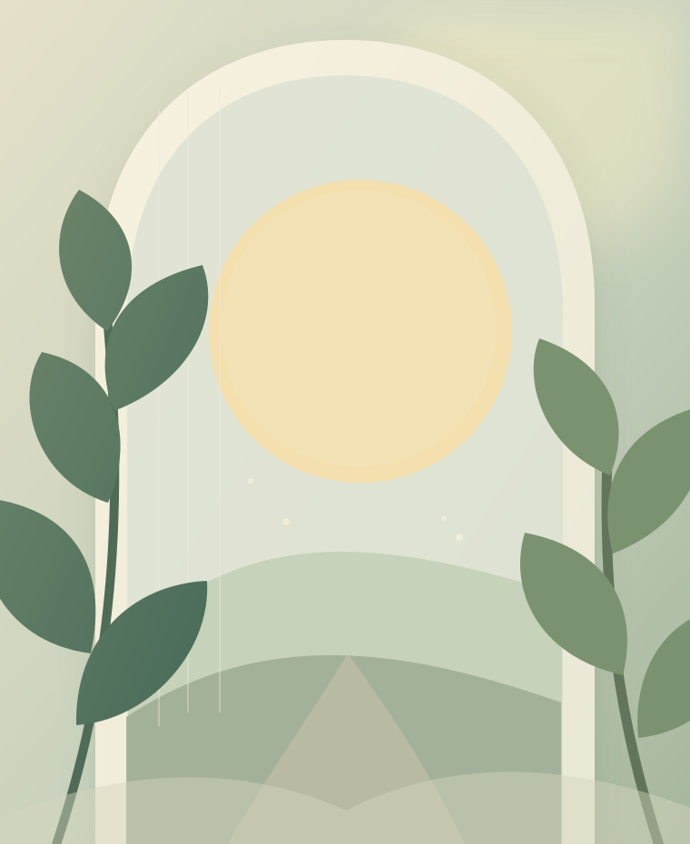

Bireysel Psikolojik Danışma
Duyguları anlamlandırma, öz farkındalık, yaşam değişimleri ve kişisel gelişim üzerine güvenli bir görüşme alanı.
Ön görüşme talep etBazen ihtiyacımız olan tek şey; duyulduğumuzu, anlaşıldığımızı ve kendimiz olabildiğimizi hissettiğimiz bir alan. Kendi yolculuğunuzda size eşlik etmek için buradayım.

Her hikâyeyi kendi biricikliğiyle dinlemek.
Gizliliği ve mesleki sınırları önemseyen süreç.
Kendi güçlü yanlarınızı fark etmeye alan açmak.
İnsanların kendi hikâyelerine, duygularına ve potansiyellerine daha yakından bakabilmelerine eşlik etmeyi önemsiyorum.
Gazi Üniversitesi Rehberlik ve Psikolojik Danışmanlık bölümünden 2026 yılında mezun oldum. Şu anda bir dershanede rehber öğretmen olarak çalışıyor; öğrencilerin akademik, kişisel ve mesleki gelişim süreçlerini destekliyorum.
Psikolojik danışmanlığa bakışımın merkezinde empati, saygı, etik sorumluluk ve her bireyin kendine özgü yolculuğuna duyduğum inanç var.
Her insanın ihtiyacı ve yaşam yolculuğu farklı. Görüşmeler, ihtiyacınızı anlamak ve size uygun bir yol belirlemek üzere şekillenir.
Duyguları anlamlandırma, öz farkındalık, yaşam değişimleri ve kişisel gelişim üzerine güvenli bir görüşme alanı.
Ön görüşme talep etSınav kaygısıyla baş etme, çalışma alışkanlıkları, motivasyon ve akademik hedefleri planlama üzerine rehberlik.
Ön görüşme talep etİlgi, değer ve güçlü yönleri keşfederek bölüm, meslek ve gelecek kararlarını daha bilinçli değerlendirme.
Ön görüşme talep etGörüşmenin kapsamı ve uygunluğu, ön görüşme sırasında birlikte değerlendirilir. Psikolojik danışmanlık, tıbbi tanı veya psikiyatrik tedavi yerine geçmez.
“Her insanın hikâyesi kendine özgüdür.— DANIŞMANLIK YAKLAŞIMI
Bazen değişim, sadece kendimizi
duymakla başlar.”
İlk iletişimden görüşme planlamasına kadar süreç açık, anlaşılır ve sizin ihtiyaçlarınıza saygılı ilerler.
Randevu formundan size uygun gün ve saat tercihlerinizi iletin.
Uygunluk ve görüşme şekli için sizinle iletişime geçilsin.
İhtiyaçlarınızı ve birlikte nasıl ilerlenebileceğini değerlendirelim.
Kendinize zaman ayırmaya karar verdiyseniz, buradan ön görüşme talebi bırakabilirsiniz. Size uygun bir plan oluşturmak için iletişime geçelim.
Bu form bir randevu talebidir. Tarih ve saat, karşılıklı teyitle kesinleşir.
Kısa formu doldurun, uygunluk durumuna göre dönüş yapılsın.
Başka bir sorunuz varsa LinkedIn üzerinden iletişime geçebilirsiniz.
LinkedIn'den ulaşınHayır. Form yalnızca tercih ettiğiniz gün, saat ve görüşme alanını iletir. Randevunuz, uygunluk değerlendirilip sizinle iletişime geçildikten sonra kesinleşir.
İlk görüşmede ihtiyaçlarınızı, beklentilerinizi ve danışmanlık sürecinin sizin için uygun olup olmadığını birlikte değerlendiririz. Detaylı bir hazırlık yapmanız gerekmez.
Sınav süreci, hedef belirleme, motivasyon, çalışma düzeni, akademik yönelim ve meslek seçimi gibi alanlarda rehberlik görüşmeleri planlanabilir.
Formda online ya da Ankara'da yüz yüze görüşme tercihinizi belirtebilirsiniz. Sunulabilecek görüşme türü, yer ve müsaitlik ön görüşmede netleştirilir.
Hayır. Psikolojik danışmanlık tıbbi tanı koyma, ilaç yazma veya psikiyatrik tedavi hizmeti değildir. Gerekli görüldüğünde uygun sağlık profesyonellerine yönlendirme yapılabilir.
Her yeni başlangıç, kendimize verdiğimiz küçük bir izinle mümkün.
Ön görüşme talep edin